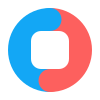
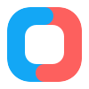
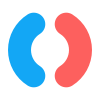

A
环窗
推荐圆环是网络，方窗是任意一台机器的屏幕。孔从 olr 的圆换成 38 见方的窗， 两色的接缝正好从窗口的切线流过 —— 家族感最强，也是三个里在 16px 下最先认得出的。
尺寸梯
64
40
24
16
abacad
骨架直接借自 open-linux-router：84 见方的整体、23 宽的环带、两个直径 23 的实心点， 点恰好填满环带并与内外边缘相切，垂直镜像与 180° 旋转都成立 —— 所以它看起来安静。 下面三个方向只改一处：环中间那个孔是什么形状，以及环要不要闭合。

圆环是网络，方窗是任意一台机器的屏幕。孔从 olr 的圆换成 38 见方的窗， 两色的接缝正好从窗口的切线流过 —— 家族感最强，也是三个里在 16px 下最先认得出的。

同一套语法换进方形容器：一块屏里开一扇窗，四周留 20 的厚边。 它和现在那枚深色圆角底图标的轮廓咬合，做 App 图标、进 Dock 都不用再加底板。

环不闭合。olr 里那两个实心点，在这里变成同一条管道的两个端口： 只握手、不窥看的盲管道。三个里最轻、最概念的一个，两端的圆帽就是那 23 的环带本身。
深色底板沿用现在那枚 favicon 的 #1b1c1a，圆角 22.5%。
B 的轮廓本身就是一个方角图标，不需要再加底板。
只用这两个，和 olr 完全一致。白色底、深色底都不用换色， 也不给标志做主题化 tint —— 换色它就不是那个标志了。